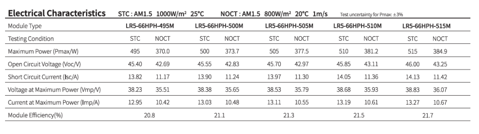
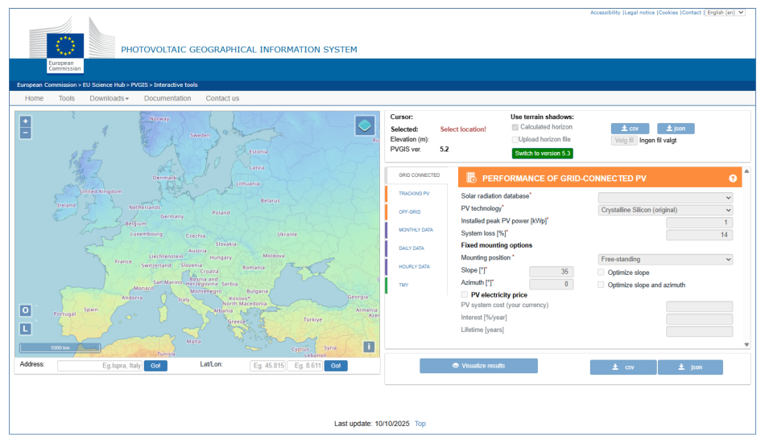
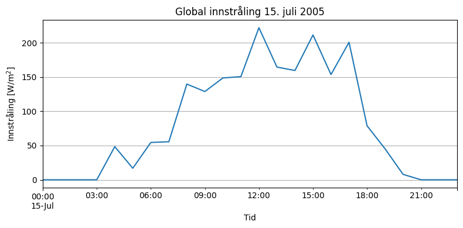
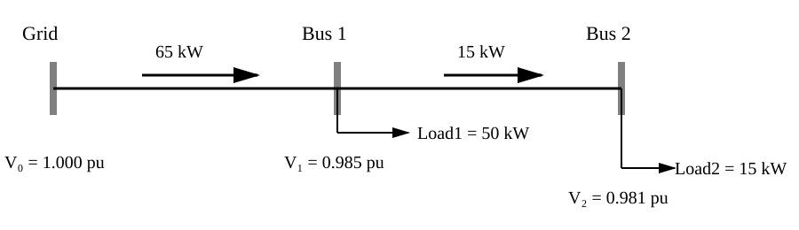
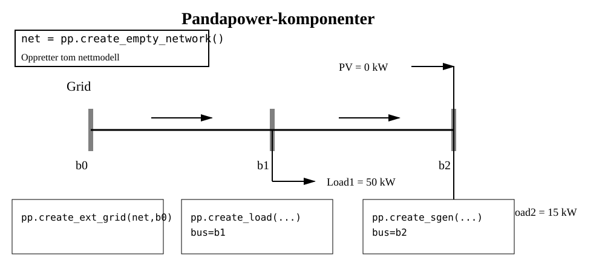
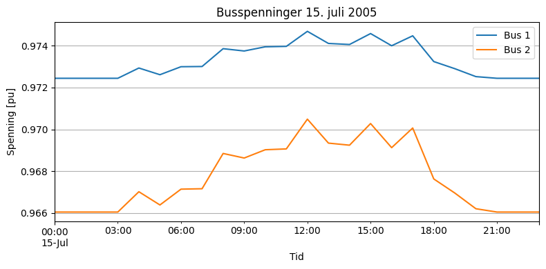
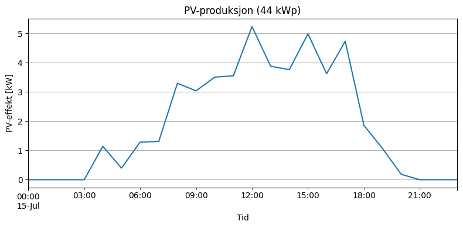
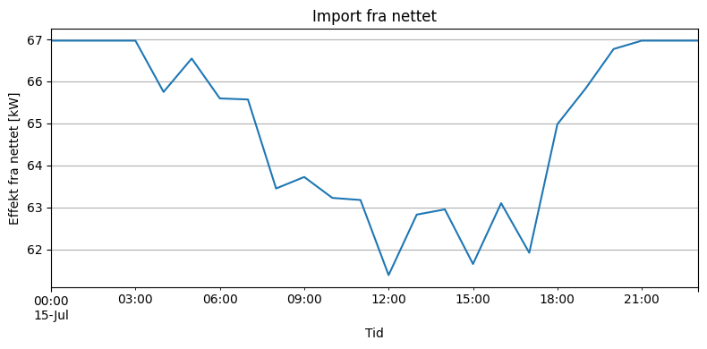

Soldata#
Med økt andel omformerbaserte ressurser (IBR-er), og flere tilfeller av systemkollaps (South Australia Blackout, Odessa Disturbance, Western Interconnection Disturbances, Iberia Blackout) stiller nye krav til spenningsregulering og systemstabilitet. For å øke kunnskapen omkring integrering av fornybar energi i distribusjonsnettet observerer og analyseres data i forskningsanlegg. Et slikt er USN’s solcelleanlegg multivariate data monitoreres, se fig-solcelleanlegg. Det ble satt opp våren 2024 og har samlet data siden august 2024. Data er tilgjengelig fra USN Porsgrunn Smart Grid LAB på github.

Fig. 28 Nord-/Øst-vendte referansepanel (Longi) ved solcelleanlegget ved USN Porsgrunn.#
Innstallert effekt#
Solcelleanlegets 54 paneler leverer samlet effekt på 23,76 kWp. Informasjon fra produsentens datablad er gitt i tab-paneler. Tester gjort av panelprodusenten under standardforhold (Standard Test Conditions - STC), der Effekten, \(P\), er en funksjon av normert innstråling, \(G\), temperatur, \(T_c\) og luftmasse \(AM\).
| Paneltype | Antall | Effekt per modul (Wp) | Sum (kWp) | |
|---|---|---|---|---|
| 0 | Longi LR5-66HPH-505 | 44 | 505 | 22.22 |
| 1 | JA Solar JAM72S20-455/MR | 4 | 455 | 1.82 |
| 2 | REC 420AA Pure-R | 2 | 420 | 0.84 |
| 3 | Longi Onyx LR4-60HTB-380M | 2 | 380 | 0.76 |
| 4 | Sunova SS-BG545-72MDH | 2 | 545 | 1.09 |
Fig. 29 Installerte paneltyper#
Inverterkapasitet#
Inverterkapasiteten, i tab-inverter, gir blant annet informasjon om hvor mye spenningsregulering som inverteren er kapabel til å levere, fig-kap-kurve.
| Inverter | Omtrentlig kapasitet (kW) | |
|---|---|---|
| 0 | Solis S5-GC40K | 40 |
| 1 | INVT MG4KTL | 4 |
| 2 | APsystems DS3 | 5 |
| 3 | Sum inverterkapasitet | 49 |
Fig. 30 Installerte invertere.#

Fig. 31 Kapabilitetskurve inverter#
Paneltester#
Forskjellige måter å teste pv-panel på inkluderer laboratorietest STC (Standard Test Conditions) som brukes for å angi solcellemodulens merkeeffekt (Wp). Dette representerer nær optimale forhold. PTC (PVUSA Test Conditions) representerer mer realistiske driftsforhold med 20 °C lufttemperatur og 1 m/s vind. Effekten målt under PTC er derfor vanligvis lavere enn STC-effekten. NOCT (Nominal Operating Cell Temperature) beskriver forventet celletemperatur under normale utendørs driftsforhold. Denne verdien brukes ofte i modeller for å estimere celletemperatur og temperaturtap, se tbl-pv-conditions.
Når solinnstråling absorberes av solcellene, omdannes bare en del av energien til elektrisitet. Resten blir til varme, noe som øker celletemperaturen. En høyere celletemperatur vil normalt redusere modulens effekt og virkningsgrad.
| Parameter | STC | PTC | NOCT | |
|---|---|---|---|---|
| 0 | Innstråling | 1000 W/m² | 1000 W/m² | 800 W/m² |
| 1 | Lufttemperatur | Typisk 0–2 °C | 20 °C | 20 °C |
| 2 | Celletemperatur | 25 °C | - | 45 °C ± 3 °C |
| 3 | Vindhastighet | - | 1 m/s | 1 m/s |
| 4 | Luftmasse | AM 1.5 | AM 1.5 | AM 1.5 |
| 5 | Formål | Bestemme merkeeffekt (Wp) | Ytelse under realistiske forhold | Estimere celletemperatur |
| 6 | Realisme | Ideelle forhold | Mer realistisk | Typiske driftsforhold |
Fig. 32 Sammenligning av STC, PTC og NOCT for solcellemoduler.#
Datablad#
Databladene gir viktig informasjon som gir cellen dens elektriske karakteristikk, basert på testene. I fig-datablad vises et utsnitt fra databladet til referansepanelet LR5-66HPH-505M. Dette databladet dekker familien av Longi 66 HPH 495-515.
{kind=link}

Fig. 33 Solcellemodulens elektriske karakteristikk basert på tester. ``#
Effektivitet \(\eta\)#
Modulens virkningsgrad er også oppgit i databladet for Longi-66HPH-505M er modul effektiviteten oppgitt til å være 21.3 % (Modul Efficiency).
Virkningsgraden til en solcelle bestemmer hvor stor andel av den innfallende solenergien som omdannes til nyttbar elektrisk energi. Virkningsgraden \(\eta\) kan beregnes fra den maksimale effekten \(P_m\) som følger:
der:
(\eta) = virkningsgrad [%]
(P_m) = maksimal elektrisk effekt [W]
(G) = solinnstråling [W/m²]
(A) = solcelleareal [m²]
Den maksimale effekten kan uttrykkes som produktet av spenning og strøm ved maksimal effektpunkt (Maximum Power Point, MPP):
Virkningsgraden kan derfor skrives som:
Alternativt kan virkningsgraden uttrykkes ved hjelp av tomgangsspenningen \(U_{oc}\), kortslutningsstrømmen \(I_{sc}\) og fyllfaktoren \(FF\):
hvor:
\(U_{MPP}\) = spenning ved maksimal effektpunkt [V]
\(I_{MPP}\) = strøm ved maksimal effektpunkt [A]
\(U_{oc}\) = tomgangsspenning [V]
\(I_{sc}\) = kortslutningsstrøm [A]
\(FF\) = fyllfaktor (Fill Factor)
[KC23]
Enkel Modell#
Den enkleste solcellemodellen skalerer effekten lineært med innstrålingen. Mer avanserte modeller korrigerer i tillegg for celletemperatur og solgeometri. Temperatur påvirker virkningsgraden, mens solgeometrien bestemmer hvor stor del av solinnstrålingen som faktisk treffer panelplanet. Dermed oppnås en mer realistisk beregning av solkraftproduksjonen gjennom året.
Den enkleste solcellemodellen antar at den produserte effekten er proporsjonal med innstrålingen. Dette gir en lineær sammenheng mellom innstråling og effekt:
der \(P_{Wp}\) er modulens nominelle effekt ved standard testbetingelser (STC):
Utvidet modell#
Mer avanserte modeller korrigerer i tillegg for celletemperatur og solgeometri. Temperatur påvirker panelvirkningsgraden, mens solgeometrien bestemmer hvor stor del av solinnstrålingen som faktisk treffer panelplanet. Dermed oppnås en mer realistisk beregning av solkraftproduksjonen gjennom året.
Den enkle modellen kan utvides ved å ta hensyn til celletemperaturen:
der \(\gamma\) er temperaturkoeffisienten til solcellemodulen, typisk negativ for silisiumbaserte solceller.
Modellen beskriver hvordan effekten påvirkes både av innstrålingen og av celletemperaturen. Økt innstråling gir høyere effekt, mens høyere celletemperatur vanligvis reduserer virkningsgraden og dermed effekten.
Modellen er fortsatt lineær med hensyn til innstrålingen \(G\), men inkluderer nå en temperaturkorreksjon som gjør den mer realistisk enn den enkle STC-modellen.
Geografisk informasjonssystem for solenergi#
Det finnes geografisk informasjonssystem for solenergi som PVVGIS (Photovoltaic Geographical Information System). PVGIS benytter solgeometri, satellittbaserte strålingsdata og meteorologiske datasett til å estimere lokal solinnstråling. Metoden kan sammenlignes med romlig interpolasjon mellom observasjonspunkter, men inkluderer i tillegg fysiske modeller for solens bane og atmosfærisk påvirkning. PVGIS benyttes til å generere tidsserier for innstråling og temperatur basert på anleggets geografiske lokasjon. Disse dataene brukes videre til å estimere effekt- og energiproduksjonen fra solcelleanlegget.
{kind=link}

Fig. 34 PVGIS startside. ``#
API-kall fra PVGIS#
PVGIS har også et eget API-kall.
Strat med:
Importere bibliotek
import requests
import pandas as pd
Informasjon om ytelse og panelhelning hentes fra datablader, se fig-van-der-valk.
{kind=link}
Fig. 35 Datablad montering. ``#
PVGIS sitt seriescalc-API, versjon 5.3, henter tidsserier for solinnstråling og meteorologiske data for anleggets lokasjon. Anlegget ble modellert med en installert effekt på 26,73 kWp (peakpower), et antatt systemtap på 14 % (loss), panelhelning på 15\(^{\circ}\) (angle), se numref og sørvendt orientering (aspect=0). Selv om anlegget består av flere orienteringer, benytter vi her en forenklet representasjon for å generere en samlet produksjonsprofil. Gjør en request på data som returneres som .json. Lager datatabell som df.
lat = 59.137337
lon = 9.671440
url = (
f"https://re.jrc.ec.europa.eu/api/v5_3/seriescalc"
f"?lat={lat}"
f"&lon={lon}"
f"&peakpower=26.73"
f"&loss=14"
f"&angle=12"
f"&aspect=0"
f"&outputformat=json"
)
data = requests.get(url).json()
df = pd.DataFrame(data["outputs"]["hourly"])
print(df.columns)
print(df.head())
Index(['time', 'G(i)', 'H_sun', 'T2m', 'WS10m', 'Int'], dtype='object')
time G(i) H_sun T2m WS10m Int
0 20050101:0011 0.0 0.0 -2.56 2.41 0.0
1 20050101:0111 0.0 0.0 -2.49 2.55 0.0
2 20050101:0211 0.0 0.0 -2.10 2.48 0.0
3 20050101:0311 0.0 0.0 -1.56 2.21 0.0
4 20050101:0411 0.0 0.0 -1.04 2.34 0.0
df["time"] = (
pd.to_datetime(df["time"], format="%Y%m%d:%H%M")
.dt.round("h")
)
df = df.set_index("time")
print(df.head())
G(i) H_sun T2m WS10m Int
time
2005-01-01 00:00:00 0.0 0.0 -2.56 2.41 0.0
2005-01-01 01:00:00 0.0 0.0 -2.49 2.55 0.0
2005-01-01 02:00:00 0.0 0.0 -2.10 2.48 0.0
2005-01-01 03:00:00 0.0 0.0 -1.56 2.21 0.0
2005-01-01 04:00:00 0.0 0.0 -1.04 2.34 0.0
Beregning av solcelleproduksjon i Python#
Denne koden beregner forventet effektproduksjon fra et solcelleanlegg basert på solinnstråling og temperaturdata.
Import av bibliotek#
import pandas as pd
Importerer Pandas, et bibliotek for behandling av tabell- og tidsseriedata.
pdbrukes som en forkortelse forpandas.Datasettet (
df) antas å være en Pandas DataFrame.
Definisjon av konstanter#
P_wp = 26.73 # kWp
gamma = -0.004 # 1/°C
NOCT = 45 # °C
P_wp#
Solcelleanleggets nominelle effekt.
Måles i kWp (kilowatt peak).
Verdien 26,73 kWp betyr at anlegget under standard testbetingelser kan levere opptil 26,73 kW.
gamma#
Temperaturkoeffisienten til solcellepanelene.
Angir hvor mye effekten endres per grad over referansetemperaturen på 25 °C.
Verdien
-0.004betyr at effekten reduseres med 0,4 % per °C.
NOCT#
Nominal Operating Cell Temperature.
Angir typisk celletemperatur ved:
800 W/m² solinnstråling
20 °C lufttemperatur
moderat vind
Her antas NOCT å være 45 °C.
Beregning av celletemperatur#
df["Tc"] = (
df["T2m"]
+ ((NOCT - 20) / 800) * df["G(i)"]
)
Det opprettes en ny kolonne Tc som representerer temperatur i solcellene.
Variabler#
T2m: lufttemperatur 2 meter over bakken (°C)G(i): solinnstråling på panelets flate (W/m²)
Formelen som brukes er:
For NOCT = 45 °C blir dette:
Eksempel#
For:
Lufttemperatur = 15 °C
Solinnstråling = 600 W/m²
får vi:
Cellene estimeres dermed til omtrent 34 °C.
Beregning av effektproduksjon#
df["p_kw"] = (
P_wp
* (df["G(i)"] / 1000)
* (1 + gamma * (df["Tc"] - 25))
)
Det opprettes en ny kolonne p_kw som inneholder produsert effekt i kW.
Formelen er:
Del 1: Nominell effekt#
P_wp
Utgangspunktet er anleggets maksimale effekt:
Del 2: Korrigering for solinnstråling#
df["G(i)"] / 1000
Standard testbetingelser bruker 1000 W/m².
Eksempler:
1000 W/m² → faktor = 1,0
800 W/m² → faktor = 0,8
500 W/m² → faktor = 0,5
Produksjonen skaleres omtrent lineært med innstrålingen.
Del 3: Temperaturkorreksjon#
1 + gamma * (df["Tc"] - 25)
Referansetemperaturen er 25 °C.
Hvis celletemperaturen øker, reduseres effekten.
Eksempel:
Panelet leverer da omtrent 92 % av nominell effekt.
Eksempel på full beregning#
Gitt:
(P_{wp}=26.73) kWp
(G=800) W/m²
(T_c=35^\circ C)
blir effekten:
Fjerning av negative effekter#
df["p_kw"] = df["p_kw"].clip(lower=0)
Funksjonen clip() setter alle verdier mindre enn 0 til 0.
Eksempel:
5.1 -> 5.1
1.2 -> 1.2
-0.4 -> 0
Dette sikrer at modellen ikke returnerer fysisk umulige negative effektverdier.
Opprettelse av produksjonsprofil#
pv_profile = df[["p_kw"]]
Det opprettes en ny DataFrame som kun inneholder effektkolonnen.
Eksempel:
p_kw
0 0.00
1 3.42
2 12.18
3 19.54
Denne kan brukes videre i simuleringer, energiberegninger eller eksporteres til fil.
Utskrift av resultat#
print(pv_profile)
Skriver produksjonsprofilen til skjermen.
Eksempel:
p_kw
0 0.00
1 0.15
2 3.42
3 11.87
4 20.53
Oppsummering#
Koden utfører følgende trinn:
Beregner celletemperaturen (
Tc) fra lufttemperatur og solinnstråling.Beregner solcelleeffekten (
p_kw) basert på:installert effekt (
P_wp)solinnstråling (
G(i))temperaturtap (
gamma)
Setter eventuelle negative effektverdier til 0.
Oppretter en produksjonsprofil (
pv_profile) som kan brukes i videre analyser av energiproduksjon.
## import pandas as pd
P_wp = 26.73 # kWp
gamma = -0.004 # 1/°C
NOCT = 45 # °C
df["Tc"] = (
df["T2m"]
+ ((NOCT - 20) / 800) * df["G(i)"]
)
df["p_kw"] = (
P_wp
* (df["G(i)"] / 1000)
* (1 + gamma * (df["Tc"] - 25))
)
df["p_kw"] = df["p_kw"].clip(lower=0)
pv_profile = df[["p_kw"]]
print(pv_profile)
p_kw
time
2005-01-01 00:00:00 0.0
2005-01-01 01:00:00 0.0
2005-01-01 02:00:00 0.0
2005-01-01 03:00:00 0.0
2005-01-01 04:00:00 0.0
... ...
2023-12-31 19:00:00 0.0
2023-12-31 20:00:00 0.0
2023-12-31 21:00:00 0.0
2023-12-31 22:00:00 0.0
2023-12-31 23:00:00 0.0
[166536 rows x 1 columns]
df['G(i)'].loc['2005-07-15']
time
2005-07-15 00:00:00 0.00
2005-07-15 01:00:00 0.00
2005-07-15 02:00:00 0.00
2005-07-15 03:00:00 0.00
2005-07-15 04:00:00 48.37
2005-07-15 05:00:00 16.85
2005-07-15 06:00:00 54.51
2005-07-15 07:00:00 55.51
2005-07-15 08:00:00 139.76
2005-07-15 09:00:00 128.85
2005-07-15 10:00:00 148.68
2005-07-15 11:00:00 150.66
2005-07-15 12:00:00 222.02
2005-07-15 13:00:00 164.54
2005-07-15 14:00:00 159.58
2005-07-15 15:00:00 211.45
2005-07-15 16:00:00 153.66
2005-07-15 17:00:00 200.76
2005-07-15 18:00:00 78.88
2005-07-15 19:00:00 45.23
2005-07-15 20:00:00 7.87
2005-07-15 21:00:00 0.00
2005-07-15 22:00:00 0.00
2005-07-15 23:00:00 0.00
Name: G(i), dtype: float64
from myst_nb import glue
import matplotlib.pyplot as plt
# serie = timeserien din
serie = df["G(i)"].loc['2005-07-15'] # tilpass til ditt datasett
fig, ax = plt.subplots(figsize=(8, 4))
serie.plot(ax=ax)
ax.set_title("Global innstråling 15. juli 2005")
ax.set_xlabel("Tid")
ax.set_ylabel(r"Innstråling [W/m$^2$]")
ax.grid(True)
plt.tight_layout()
glue("fig-innstraling", fig, display=False)
plt.close(fig)

Fig. 36 Global innstråling, \(G(i)\), for 15. juli 2005.#
Pandapower#
Nettmodell#
Data:
Spenning: 400 V trefase
Kabel 1: 100 m
Kabel 2: 100 m
r = 0.642 Ω/km
x = 0.083 Ω/km
PV-produksjon = 0 kW
Effektdata#
Baseeffekt:
Businformasjon#
Buss |
Type |
P (pu) |
Q (pu) |
Spenning |
|---|---|---|---|---|
Bus 0 |
Slack |
Ukjent |
Ukjent |
\(V_0, 1\angle0^{\circ}\) |
Bus 1 |
PQ |
-0.50 |
-0.10 |
\(V_1\) ukjent |
Bus 2 |
PQ |
-0.15 |
-0.03 |
\(V_2\) ukjent |
Per-unit impedans og admittans#
Baseimpedansen er
Linjeimpedansen i per unit lengden tatt i betraktning $$ z_{pu}#
\frac{0.0642+j0.0083}{1.6} $$
Linjeadmittansen i per unit er
Iterasjon 1: |V1|=0.989709 pu, |V2|=0.983534 pu
Iterasjon 2: |V1|=0.981368 pu, |V2|=0.975090 pu
Iterasjon 3: |V1|=0.977058 pu, |V2|=0.970725 pu
Iterasjon 4: |V1|=0.974829 pu, |V2|=0.968467 pu
Iterasjon 5: |V1|=0.973676 pu, |V2|=0.967299 pu
Iterasjon 6: |V1|=0.973079 pu, |V2|=0.966695 pu
Iterasjon 7: |V1|=0.972770 pu, |V2|=0.966383 pu
Iterasjon 8: |V1|=0.972611 pu, |V2|=0.966221 pu
Iterasjon 9: |V1|=0.972528 pu, |V2|=0.966137 pu
Iterasjon 10: |V1|=0.972485 pu, |V2|=0.966094 pu
Iterasjon 11: |V1|=0.972463 pu, |V2|=0.966071 pu
Iterasjon 12: |V1|=0.972452 pu, |V2|=0.966060 pu
Iterasjon 13: |V1|=0.972446 pu, |V2|=0.966054 pu
Iterasjon 14: |V1|=0.972443 pu, |V2|=0.966051 pu
Iterasjon 15: |V1|=0.972441 pu, |V2|=0.966049 pu
Iterasjon 16: |V1|=0.972440 pu, |V2|=0.966048 pu
Iterasjon 17: |V1|=0.972440 pu, |V2|=0.966048 pu
Iterasjon 18: |V1|=0.972440 pu, |V2|=0.966048 pu
Iterasjon 19: |V1|=0.972440 pu, |V2|=0.966047 pu
Iterasjon 20: |V1|=0.972440 pu, |V2|=0.966047 pu
Iterasjon 21: |V1|=0.972439 pu, |V2|=0.966047 pu
Iterasjon 22: |V1|=0.972439 pu, |V2|=0.966047 pu
Iterasjon 23: |V1|=0.972439 pu, |V2|=0.966047 pu
Konvergert løsning
------------------
Bus 0: |V|=1.000000 pu, vinkel=0.0000°
Bus 1: |V|=0.972439 pu, vinkel=0.1086°
Bus 2: |V|=0.966047 pu, vinkel=0.1345°


Hva gjør Pandapower?#
pp.runpp(net)
og sammenligner med:
net.res_bus
net.res_line
net.res_ext_grid
import pandapower as pp
import pandapower.plotting as plot
import matplotlib.pyplot as plt
# --------------------------------------------------
# Opprett nett
# --------------------------------------------------
net = pp.create_empty_network()
# --------------------------------------------------
# Busser
# --------------------------------------------------
b0 = pp.create_bus(
net,
vn_kv=0.4,
name="Trafo",
geodata=(0, 0)
)
b1 = pp.create_bus(
net,
vn_kv=0.4,
name="Load",
geodata=(1, 0)
)
b2 = pp.create_bus(
net,
vn_kv=0.4,
name="PV",
geodata=(2, 0)
)
# --------------------------------------------------
# Nettstasjon
# --------------------------------------------------
pp.create_ext_grid(net, b0)
# --------------------------------------------------
# Linjer
# --------------------------------------------------
line1 = pp.create_line_from_parameters(
net,
b0, b1,
length_km=0.1,
r_ohm_per_km=0.642,
x_ohm_per_km=0.083,
c_nf_per_km=0,
max_i_ka=0.2
)
line2 = pp.create_line_from_parameters(
net,
b1, b2,
length_km=0.1,
r_ohm_per_km=0.642,
x_ohm_per_km=0.083,
c_nf_per_km=0,
max_i_ka=0.2
)
# --------------------------------------------------
# Last
# --------------------------------------------------
# Last ved Bus1
pp.create_load(
net,
bus=b1,
p_mw=0.050, # 50 kW
q_mvar=0.010,
name="Load1"
)
# Last ved Bus2
pp.create_load(
net,
bus=b2,
p_mw=0.015, # 15 kW
q_mvar=0.003,
name="Load2"
)
# --------------------------------------------------
# PV-anlegg 44 kWp
# --------------------------------------------------
#pv = pp.create_sgen(
# net,
# bus=b2,
# p_mw=0.021, #
# q_mvar =0.11,
# name="PV"
#)
# --------------------------------------------------
# Lastflyt
# --------------------------------------------------
pp.runpp(net, numba=False)
# --------------------------------------------------
# Resultater
# --------------------------------------------------
print("\nBus-spenninger")
print(net.res_bus.vm_pu)
print(net.res_bus[["vm_pu", "va_degree"]])
print("\nEffekt fra nettet")
print(net.res_ext_grid.p_mw)
print("\nEffektflyt i linjer")
print(net.res_line[["p_from_mw"]])
#print('nett',net.load)
# --------------------------------------------------
# Plott nett
# --------------------------------------------------
#plt.figure(figsize=(8,3))
#plot.simple_plot(
# net,
# bus_size=1,
# line_width=2,
# plot_loads=True,
# plot_sgens=True
#)
#plt.show()
Bus-spenninger
0 1.000000
1 0.972442
2 0.966051
Name: vm_pu, dtype: float64
vm_pu va_degree
0 1.000000 0.000000
1 0.972442 0.108670
2 0.966051 0.134629
Effekt fra nettet
0 0.066971
Name: p_mw, dtype: float64
Effektflyt i linjer
p_from_mw
0 0.066971
1 0.015101
Neste steg: Solkraft#
PV-produksjon legges til:
net.sgen.at[pv, 'p_mw'] = 0.04
Da kan vi undersøke:
Hvordan strømmer endres
Hvordan spenninger endres
Redusert nettimport
Revers effektflyt
Bus-spenninger
0 1.000000
1 0.984357
2 0.991444
Name: vm_pu, dtype: float64
vm_pu va_degree
0 1.000000 0.000000
1 0.984357 -2.399019
2 0.991444 -4.902123
Effekt fra nettet
0 0.053518
Name: p_mw, dtype: float64
Effektflyt i linjer
p_from_mw
0 0.053518
1 -0.001312
G PV_kW V_bus1 V_bus2 P_nett_kW
tid
2005-07-15 00:00:00 0.00 0.000000 0.972442 0.966051 66.970741
2005-07-15 01:00:00 0.00 0.000000 0.972442 0.966051 66.970741
2005-07-15 02:00:00 0.00 0.000000 0.972442 0.966051 66.970741
2005-07-15 03:00:00 0.00 0.000000 0.972442 0.966051 66.970741
2005-07-15 04:00:00 48.37 1.141532 0.972933 0.967021 65.749740


